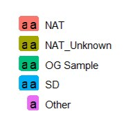

PFU Plaque Detection Classifier
- PyTorch
- ResNet
- Optuna
- Google Colab
- GCS
- scikit-learn
Background
Repurposed an existing binary image classifier used for colony detection to instead detect plaques in microbiological assays. This model serves as the first stage of a three-model plaque enumeration pipeline.
Approach: Extracted 9,558 well images from 105 experimental folders in Google Drive and added them to the company’s GCS bucket. Those images were loaded into the website’s PFU annotation tool for people to count wells. Annotators had three options: enter 0 if there are no plaques in the image, count each plaque and submit, or enter TNTC — too numerous to count — if individual plaques were bunched together into larger plaques and could not be identified properly, or if there were a great many of them (at least 80).
With newly annotated images and pre-existing ones, roughly 1,000 images were used to fine-tune a ResNet classifier with an Optuna-driven hyperparameter search in a reproducible Google Colab pipeline.
Split: 747 train / 121 validation / 124 test images.
Workflow
Processing stepVerification / QCDecision or gate
Results
| Metric | Value |
|---|---|
| Accuracy | 0.9919 |
| MCC | 0.9842 |
| Recall | 1.0000 |
| Precision | 0.9851 |
Grad-CAM — what the model is looking at
Grad-CAM overlays show the classifier in action on held-out wells: the heat map marks the pixels driving the prediction.
Key findings
Identified a data leakage bug before it could inflate reported accuracy. A random split allowed images from the same physical assay plate to appear in both training and test sets. I redesigned the split and built in leakage checks to guarantee zero contamination.
Diagnosed a confounding factor that inflated metrics. The well images all come from 3×4 panels. After an initial run the model returned roughly 0.98–0.99 MCC on its own, which warranted investigation. Auditing the results showed most identified plaques came from column 4 — the last column of the panel — meaning the model could have been using position rather than image content: the well has plaques if it is in column 4, otherwise 0. Running that rule alone scored a test MCC of 0.82.
The model was cleared of relying on that shortcut. A stratified test built specifically to defeat the positional bias showed the model still scored 92–97% on those adversarial cases, confirming genuine visual plaque detection rather than pattern-matching on position.
Antimicrobial Resistance Prediction
- scikit-learn
- XGBoost
- LightGBM
- Optuna
- k-mer profiling
- BioPython
Background
To create a production-worthy configuration for an existing k-mer based classifier model that predicts whether an Escherichia coli strain is resistant or susceptible to bactrim. The goal is that after running the model and obtaining the final feature set, those k-mers are traced back to the strains to identify the coding regions and genes the model learned in predicting resistance.
How the labels were created
Every strain needs a resistant or susceptible label before any modeling can happen, and that label is produced from two numbers.
The CLSI breakpoint is the clinical concentration cutoff. For bactrim that is 4 µg/mL and it was taken as given rather than tuned.
The IC value is the concentration needed to kill off a given percentage of the bacteria — IC85, for instance, is the concentration required to kill 85% of the E. coli. My mentor generated the MIC curves from experimental strain data and provided values from IC1 to IC99 for each strain. The default threshold used was IC90 but after experimenting with different thresholds, IC83 provided the best metrics.
The labeling rule: For each strain’s IC83 value, if it was greater than or equal to the CLSI breakpoint of 4 µg/mL, the strain was labeled resistant to bactrim; otherwise it was labeled susceptible.
| Parameter | Value | How it was set |
|---|---|---|
| CLSI breakpoint | 4 µg/mL | Clinical standard for bactrim, taken as given |
| IC threshold | IC83 | Experimental — started at IC90, swept to find the best performer |
| Label rule | IC ≥ 4 µg/mL → resistant | Applied to all strains |
Workflow
Processing stepVerification / QCDecision or gate
Results
Final model, 803 genomes:
| Metric | Value |
|---|---|
| Genomes | 803 |
| Accuracy | 90.06% |
| MCC | 0.799 |
| AUROC | 0.913 |
| Final feature count | 154 |
Four views of the final model.
CGAGCGCAAGG leads at roughly twice the weight of the next feature, and is one of the two sequences that later mapped onto intI1. This chart is the first hint of what the interpretation below confirms — the model is keying on the integron rather than on a resistance gene itself.Continuous prediction
Trained a GBR regression model to predict continuous IC83 MIC values from k = 11 k-mer features, then layered a multi-class GBC classifier on top using the same optimal feature set. Both stages read the same IC83 column used for the binary labels, so one threshold runs through the whole pipeline.
- Stage 1 — regression (GBR). k = 11 k-mers → log₂(IC83 MIC). Pipeline: screen → tune1 → deplete → tune2 → fit. Metrics: RMSE in log₂ dilutions, MAE, R², Spearman ρ.
- Stage 2 — classifier on top (GBC). Depleted k-mers → discrete MIC tier. Classes are round(log₂(MIC)), data-driven with no CLSI breakpoints. Pipeline: tune → fit, inheriting the feature set from stage 1 depletion. Metrics: accuracy, macro-F1, weighted-F1, confusion matrix.
Genomic feature interpretation
Selected features from the final feature set were searched in the 803 strains, and each hit found was cross-referenced against the strain’s Bakta annotation to identify the gene. Below is the coding-region hit summary:
| Gene | Product | Coding hits | Distinct k-mers | Strains R (%) | Strains S (%) | Enrichment |
|---|---|---|---|---|---|---|
| intI1 | Class 1 integron integrase | 3,877 | 8 | 338 (73.8%) | 24 (7.0%) | 66.8 |
| mph(A) | Macrolide 2′-phosphotransferase | 464 | 1 | 306 (66.8%) | 28 (8.1%) | 58.7 |
| mrx(A) | Macrolide efflux MFS transporter | 1,844 | 2 | 306 (66.8%) | 28 (8.1%) | 58.7 |
| dfrA17 | Trimethoprim-resistant DHFR | 102 | 6 | 21 (4.6%) | 3 (0.9%) | 3.7 |
Interpretation. The dominant signal is intI1, the class 1 integron integrase — found in 73.8% of resistant strains against 7.0% of susceptible ones, a 66.8-fold enrichment. That is not a bactrim-resistance mechanism. A class 1 integron is a mobile platform that captures and carries resistance cassettes, so what the model is keying on is the vehicle rather than the gene it carries. mph(A) and mrx(A) behave as a single unit and track intI1 closely, consistent with a macrolide cassette riding the same integron — co-selected, not causal. dfrA17, the one genuine trimethoprim-resistance mechanism in the list, is largely decoupled from the other three and covers only 21 of 458 resistant strains. So the model is not learning resistance directly; it is learning the mobile element that resistance tends to travel on.
Wastewater AMR Surveillance
- Python
- ANI clustering
- Chi-square
- Matplotlib
- pandas
Background
Wastewater aggregates bacterial populations across an entire catchment, which makes it a useful substrate for resistance surveillance. This analysis characterized antimicrobial resistance prevalence and geographic distribution across E. coli isolates and tested whether geographic origin, genomic similarity or colony phenotype correlates with predicted resistance status.
Workflow
Processing stepVerification / QCDecision or gate
Binary resistance predictions for the wastewater strains were generated from the AMR resistance model and joined with isolate metadata covering collection location and colony phenotype. The hierarchical clustering was constructed by my mentor, not by me.
Results
Locations and states cannot be revealed and are blacked out for security and privacy. Facilities are labeled State N, Facility N throughout, consistently across all three figures.
| Metric | Value |
|---|---|
| QC-passed isolates | 81 |
| Treatment facilities | 12 |
| States | 5 |
| Predicted resistant | 17 (21%) |
| Facilities with resistant isolates | 7 of 12 |
Three views of the same 81 isolates, each testing a different candidate predictor.
Key finding
No state, facility, or EMB phenotype is a clear indicator or predictor for resistance. Resistant and susceptible isolates are interleaved across every stated geographic location and colony phenotype. This points to AMR potentially being carried on mobile genetic elements — consistent with the integron and cassette findings from the genomic prediction work — rather than driven by a single resistant clone spreading through the network.
Liquid Host Range Optimizer
- Python
- Flask
- Combinatorial optimization
- REST APIs
- BigQuery
Background
To implement a tool that automates experiment configuration and execution into a single guided workflow. All input and output files are streamlined so that a user’s choice of strains, phages, and replicates per strain travel from the company website to the VANTAGE Liquid Handling System. It serves as an interface between the scientists requesting an experiment and the laboratory team performing them.
Requesting a host-range experiment previously meant entering strain and phage data one record at a time to produce the files the liquid handler needs, then submitting them manually. The tool collapses that into one guided flow, catches inventory mismatches before anything reaches the robot, and maintains experiment records without manual entry.
Workflow
Main flowInventory decisionPanel-break decision
- Create Experiment sits before the edit loop and produces three output files at once: the Labguru experiment entry, the panel layout file, and the phage dilution file. Because it runs inside the loop, each pass re-creates or edits all three to match whatever the user has changed — the files never drift from the current specification.
- The two submission actions are deliberately separate. Submit Experiment sets the status to ongoing and nothing more — no SAM job is dispatched, so no SAM output files are produced. Submit SAM Job also sets the status to ongoing but additionally sends the panel layout file to the SAM machine, which generates the four SAM output files. Keeping them apart lets a scientist register and hold an experiment without committing instrument time.
- Experiments stay editable while unstarted, so a different scientist can pick one up, while destructive actions remain restricted to the owner. Status is derived from a live data-warehouse query joined against results storage rather than a precomputed export so it cannot go stale.
Interface
Four points in that flow where the scientist is making a decision, in the order they are encountered.
Supplementary Analysis
- BLAST+
- Bakta
- geNomad
- SciPy
- pandas
Engineered strain verification
Background
Three engineered variants of a parent bacterial strain were supplied with specific genetic claims: one prophage-free, one with the HylA and HylB genes removed, and one with both modifications. This audit tested whether the assemblies actually carry the claimed deletions.
Workflow
Results
Four checks, each run independently so a failure in one cannot propagate.
A quality anomaly also surfaced. The parent and two variants each assemble into a single contig of about 2.71 Mb at 32.8% GC, as expected. The third assembles into two contigs: a main contig matching the parent chromosome length, plus an additional 47.5 kb contig absent from every other strain. Flagged, not resolved.
Key findings
Prophage removal is not supported. Two prophages were detected in the parent. Aligning them against the engineered strains recovered near-identical hits in all three variants, at 99.42% to 100% identity, including the two claimed to be prophage-free.
HylA and HylB removal cannot be confirmed by this method. Exact-match annotation found neither target gene in any of the four assemblies, including the wild-type parent. Without a positive call in the parent there is no baseline against which a deletion can be verified. That is a limitation of the method, not evidence the deletion failed.
384-well plate position quality control
Background
Edge wells on a 384-well plate are exposed to different thermal conditions than interior wells. This analysis tested whether that position introduces a systematic bias in measured growth area-under-curve across five independent plate runs, and if so whether the bias is large enough to affect downstream conclusions.
Workflow
Results
| Metric | Value |
|---|---|
| Independent plate runs | 5 |
| Strain-well data points | 4,601 |
| Inner-well points | 3,292 |
| Outer-well points | 1,309 |
| Strains present in both zones | 659 |
Key finding
After subtracting each well’s estimated positional bias, the inner-versus-outer difference became non-significant. The signal is fully explained by well position rather than an unmodeled biological factor. The effect is confined to the plate border, is not a plate-wide gradient, and its direction is plate-dependent. Absolute AUC at the border warrants mild caution, but relative strain ranking is preserved, so cross-strain comparisons remain robust.
Separately, one replicate was identified reading at roughly 19% of its true AUC. This was diagnosed as instrument failure rather than biological variation and flagged before it could influence downstream analysis.
Supplementary Tools
- JavaScript
- SVG
- Python
- Flask
- pytest
- Semantic Scholar API
Interactive AUC heatmap
Background
Before this, the output of the growth curves for every strain–phage combination was all in a PDF spanning at least a hundred pages, making it impossible to compare multiple growth curves. The goal for this tool was to incorporate all of an experiment’s static output into an interactive HTML page, making it easy to parse and compare multiple strain–phage combinations at once.
Workflow
The code that creates each static output is now repurposed to create the interactive AUC heatmap for every completed in-lab experiment. The strains (rows) and phages (columns) that were tested in the experiment are shown in the heatmap.
- The user goes through each cell, representing one strain–phage combination, and sees that cell’s growth curves in the table on the right.
- Clicking a cell pins it, so the cursor can move freely without losing the selection.
- Multiple curves can be compared by clicking cells individually, selecting a whole row — the growth curves for one strain against every phage it was tested with — or dragging over an area.
- Clicking Generate Curves opens a pop-up with all selected curves. Checkboxes on the right control which are shown, the plot can be zoomed and dragged, and a toggle at the bottom switches between control curves, phage curves, or both.
Results
Ships as one dependency-free HTML file with inline CSS and JavaScript and an embedded JSON payload, making no network requests so it opens offline. Charting is hand-built inline SVG including axes, gridlines, crosshairs, drag-to-zoom and pan, with no charting library. The existing AUC pivot and optical-density QC code path was reused rather than recomputed, so the interactive view’s numbers match the already-shipped static heatmap. The largest grid rendered is 20 × 345, or 6,900 cells.
Literature discovery tool
Background
The tool surfaces relevant scientific papers given one or more papers of interest, using a public scholarly-graph API and its embedding-based recommendation endpoint. It provides a more reliable route to trustworthy academic sources than manual search. A colleague built the core client, recommendation pipeline and command-line scaffold; my contributions extended it.
Workflow
The fallback mechanism. Recognized identifiers are normalized without an API call. Where an identifier is not recognized, the tool performs a keyword search against the scholarly graph, then falls back to PubMed and arXiv title search. The recommender returns both the result set and a flag indicating whether fallback was used, so the caller can tell the user the results are degraded rather than presenting them as equivalent.
Results
Three screens, in the order a user meets them.
Visual Phenomics and Phylogenetic Inference
- PyTorch
- Grounded SAM 2
- Kmult
- Phylogenetics
- Google Colab
- pytest
Background
Is visual pattern similarity among surgeonfish (family Acanthuridae) associated with evolutionary relatedness, or does it arise independently of shared ancestry? For species with a known molecular phylogeny, the test is whether quantified visual similarity between species pairs covaries with phylogenetic distance.
A significant result is evidence that visual pattern covaries with relatedness — that closely related species tend to resemble one another. A null result means pattern is not explained by relatedness at the resolution these methods detect, and resemblance is more likely convergent.
What this test cannot separate. Pattern covarying with phylogeny is consistent with pattern being heritable, but equally consistent with pattern tracking an ecological variable — diet, depth, reef zone — that is itself phylogenetically conserved. Closely related surgeonfishes share ecology as well as genes. Distinguishing the two would need ecological covariates and a phylogenetic regression, which is out of scope; the claim is scoped to what the statistics actually measure.
This project is being rebuilt from scratch. An earlier pipeline produced unreliable results: a broken evaluation metric, a misreported ROC-AUC, a silently dropped test image, and a phylogenetic-signal result that came from data-dredged feature selection rather than a preregistered test. Rebuilding proceeds one phase at a time, each verified against its own output before the next begins. Phases 0 and 1 are complete against the real dataset and Phase 2 has a working prototype; no scientific results are reported yet.
| Item | Value |
|---|---|
| Species | 64, across all six extant Acanthuridae genera |
| Candidate images evaluated | 2,329 |
| Accepted into the dataset | 1,460 (869 rejected) |
| Species meeting the 25-image target | 55 of 64 |
| Human review rounds | 9 |
| Specimens extracted (Phase 1) | 856 of 1,460 |
| Phylogenetic reference | Fish Tree of Life genetic-data-only tree; 50 of 64 species matched |
| Test suite | 119 passing, ruff clean |
Workflow
Processing stepVerification / QCDecision or gate
Images are collected programmatically through GBIF’s public API rather than hand-collected or scraped from search results. robots.txt is enforced at runtime before every request, including each image download, which can resolve to a different host than the API itself. The license allowlist accepts public-domain and Creative Commons attribution licenses but excludes no-derivatives licenses, since the pipeline produces derivative works in the form of masks, crops and figures. License and attribution are logged per image, and requests are rate-limited to one per second with a descriptive user agent and contact address.
Automated filters catch mechanical problems such as resolution and duplication but cannot reliably judge whether an image is a clean, close-up photograph of a single specimen. That judgement is made through a generated review page across nine rounds. Nine species remain below the 25-image target because of licensed-photo availability rather than a pipeline limitation.
Specimen extraction uses Grounded SAM 2 — Grounding DINO for zero-shot, text-prompted detection followed by SAM 2.1 for segmentation — so no training set or fine-tuning is required. A QA gate decides whether an image shows exactly one roughly-centered fish; anything ambiguous is routed to human review rather than silently accepted or dropped. Pattern features are then extracted as three independent sets rather than one blended vector: coloring by dominant-colour clustering, spots by connected-component blob shape, and stripes by region elongation with per-channel FFT periodicity along the body axes. Keeping them separate is a developmental argument, not an engineering convenience — a candidate-gene literature review found the three pattern types are generated by distinct mechanisms.
Results
No scientific results yet. What exists is process: Phase 1 ran the full 64-species dataset on a Colab L4 GPU and every one of the 1,460 images reached a final, non-flagged status. Getting there took several review rounds and three real fixes rather than one clean pass.
- The QA gate could not tell a duplicate detection from two fish. After the first run, 100 images sat flagged as
multiple_fishand a reviewer confirmed all 100 were fine. The gate counted qualifying boxes without deduplicating them, so two overlapping detections of the same fish were indistinguishable from a genuine multi-fish photo. Fixed by collapsing boxes above an IoU threshold before counting. - That fix moved none of them. Rather than guess a second cause, running the detector directly on five of the flagged images and printing raw box coordinates showed the real pattern: one large high-confidence box plus a small, non-overlapping, low-confidence box — background clutter, not a duplicate. A qualifying box under 20% of the largest box’s area is now dropped as clutter. Together the two fixes resolved 93 of the 100; the remaining 6 were non-uniform enough that a third automated threshold was not justified, and went through an explicitly scoped human-override path instead.
- A scaling cliff no test caught. Phase 2’s colour clustering fed every masked-in pixel into an iterative k-means fit. Every test used synthetic images under about 1,200 pixels, but a real fish mask runs to millions, and a two-million-pixel fit took roughly 18 seconds — consistent with a run stretching past an hour with no progress output. The iterative fit now runs on at most 50,000 sampled pixels, reproducing the full-image cluster centres to within about one RGB unit, then assigns every real pixel in a single vectorized pass.
Preregistration
The statistical plan is fixed in advance, specifically because of how the first attempt failed. Kmult is the primary per-dimension test via geomorph::physignal.z, with Mantel retained only as a secondary distance-based check. The branch-scaling parameter is pinned to lambda = "front" rather than "burn" — "burn" selects the value that maximizes the effect size, which is the very statistic being compared across the three pattern dimensions, and maximizing the thing you are about to compare is the shape of mistake that produced the discarded result. A multiple-comparisons correction applies across all three dimensions, and a null result will be reported as inconclusive rather than as evidence of no association.
Key finding
One prediction is checkable in advance. Acanthurus is paraphyletic with respect to Ctenochaetus, and the source phylogeny recovers that paraphyly specifically as Ctenochaetus nested with two named species, A. nubilus and A. pyroferus. Both are present in the 50-species phylogeny-matched set, so the prediction is testable as named rather than as a genus-level proxy. Whether the paraphyly also shows up in visual similarity is a direct consequence of the broader question, and a good test of whether the method detects anything real.
Two sampling limitations are worth stating alongside it. Taxon sampling is uneven across genera against each genus’s full species count — Prionurus 43% and Naso 70%, against a family mean of 77% — and sparse sampling in Naso disproportionately shapes the large phylogenetic distances that most influence the result. Restricting to genetically-placed species also drops Acanthurus coverage from 79% to 54%, which is the genus this specific prediction most depends on.
Sourdough Yeast Domestication Genomics
- GATK
- bcftools
- SnpEff
- R
- PCA
- Phylogenetics
Background
Sourdough is a human-created environment, so any yeast population originating from it is by definition domesticated. This project examined the genomic signatures of that domestication using Saccharomyces cerevisiae populations experimentally evolved in a bread-dough environment.
Workflow
Results
| Metric | Value |
|---|---|
| High-confidence variants | 85 across 72 samples |
| Chromosomes analyzed | 16 |
| High-coverage CNV sites | 26,207 |
| Low-coverage CNV sites | 33,867 |

Credited co-author on the abstract submitted to the International Conference on Yeast Genetics and Molecular Biology, 2025. Repository
Contact
Overview
My work is the computational half of genomics problems — predictive models on genomic and image data, pipelines for processing and analyzing sequence data, and internal web tools built for specific laboratory workflows. I spend about as much time testing whether a result holds up as producing it. Recent work spans antimicrobial resistance prediction from bacterial genomes, deep learning for laboratory imaging, variant calling and population genomics, and phylogenetic inference.
- Education
- MS Bioinformatics, UNC Charlotte (May 2027)
BS Computer Science, NC State (2025) — Magna Cum Laude, 3.62 - Location
- Charlotte, North Carolina — open to relocation